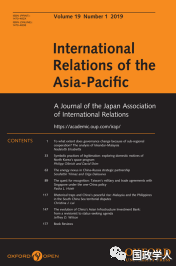

收录于合集

简 介
**
**
【作者】 Philipp Olbrich，荷兰格罗宁根大学国际关系与国际组织系博士生；David Shim，荷兰格罗宁根大学国际关系与国际组织系助理教授。
【编译】 崔宇涵
【审核】 李玉婷 高嘉琳
【来源】 International Relations of the Asia-Pacific Vol. 19, (2019) 33–61

【期刊简介】
International Relations of the Asia-Pacific 是发表亚太地区国际关系研究的重要国际关系类期刊。该期刊于2001年推出，每年1月、5月和9月发行三次。该期刊的重点是：亚太地区的国家间关系；亚太地区与世界其他地区的关系，以及涉及亚太一国或多国的国际关系的一般问题和理论。
揭秘朝鲜太空计划的国内动机
Symbolic practices of legitimation: exploring domestic motives of North Korea’s space program **** ****
Philipp Olbrich
内容提要
尽管面临国际制裁和经济紧张，朝鲜仍把稀缺资源用于耗资巨大的太空计划。已有研究通常从国际安全或国际声誉的角度进行解释。认为平壤以其与太空有关的努力为借口，发展洲际弹道导弹，并提高其国际声誉。本文认为，这些解释是不够的，进而注重对国内动机的考察。最近的朝鲜研究强调了表现和象征对金氏政权政治的重要性，本文探讨了领导层反复出现的行为与常规化操作，以图巩固其国内政权的合法性。本文目标是提供一个更好了解朝鲜事务的概念性途径。朝鲜的国内因素对于那些与朝鲜政权就其太空计划进行谈判的人来说，也具有实际的政策影响。
文章导读
1
朝鲜太空计划中的政治
在考察朝鲜主要技术的发展时，学界往往倾向于从国际关系角度思考。第一个观点从国际安全的角度出发，将朝鲜太空计划描述为弹道导弹发展计划的一部分。第二个观点指出，朝鲜通过发展太空能力，寻求国际威望。但考虑到朝鲜发射卫星运载火箭之后遭受的国际抗议，通过太空计划获得国际地位的论述是非常值得怀疑的。实际上，朝鲜因为太空计划受到了联合国的严厉制裁。因此，第一种解释更有力，它从现实主义的角度揭示了朝鲜坚持太空计划的外部原因。但是，上述解释在强调其太空计划的连续性时忽视了诸如政权正当性和政权稳定性等国内因素。作者认为，与朝鲜的核武器计划在维持国家“先军政治”政策中的作用类似，太空计划已成为金氏政权国内统治正当性的关键。这一解释有助于回答为什么朝鲜领导人在承受巨大的安全和国际声誉成本时，仍然致力于其太空计划。
2 朝鲜政权展现正当性的象征性实践
朝鲜坚持太空计划的正当性理论假设民族国家需要不断重新制定和复制现任领导层的权力主张。 因此 ，本文 对正当性的定义是一种 “ 获得支持的过程， 这种 过程基于经验 的、 韦伯式的 ‘ 合法性信仰 ’” 。 ****虽然朝鲜政权努力通过一定程度的压制以维持其权力，但由于压制的成本高昂，其依然需要建立政权的正当性。
此外，如伊斯顿所言，对政权的政策还有特定性支持（specific support）和分散性支持（diffuse support）的区别。前者强调政权的社会经济表现，后者侧重于意识形态、宗教和/或民族主义、领导人的人格魅力或外部威胁的作用。分散性支持的概念可以与当前研究中的另一成果相联系，即正当性主张与专制政权的关系——尤其是在政权遭到外国批评时，因为外部干涉可被政权用作宣扬其正当性的象征性优势。但是对分散性支持的测量非常困难，这是因为：一，很难在朝鲜进行实证调查；二，不同人群对正当性的理解不同。可以运用三种策略取得近似值：评估针对领导层的抗议活动的数量和强度、参考评估政权正当性的专家调查、分析该政权自身的正当性主张。作者认为，对于朝鲜，只能考察朝鲜政权对其正当性的宣称。朝鲜领导层必须不断强调其权威，其中个人和集体层面的表现和象征性做法至关重要。
3 技术正当性：朝鲜的常规象征性实践
本节作者将论述朝鲜领导层如何通过日常生活中的象征性实践以及发射卫星运载火箭（SLV）来获得正当性和稳定其统治。
朝鲜经常将技术发展和对领导人的宣传结合起来，在与空间计划有关的频繁和多样的象征性做法中可以观察到这一点：2012年4月卫星发射的日期与4月15日金日成诞辰100周年相对应，后者也被称为朝鲜太阳日；同样，四年后的发射计划在金正日诞辰日之前安排，并且据报道也是太空科学家给现任领导人金正恩的礼物。为了进一步加强政权的领导与国家空间计划之间的联系，金正恩经常在新闻报道中与卫星发射项目相联系，并借助照片展示他在卫星控制中心监督发射。2012年4月（SLV）发射失败的消息没有提到领导人；成功的发射则再次被视为是金正恩的勇气、智慧和领导力的直接结果。
科技项目也成为朝鲜政权解决国家安全、正当性和国内粮食供应不确定等各种问题的战略的核心部分。强调太空计划的经济利益，表明领导层正在通过发展空间技术增加经济发展的科技基础。空间方案还被描述为一种与国际趋势保持一致的有远见的政策。这一点非常重要，因为朝鲜认为自己受到不公平对待，只有本国太空计划受到国际批评和制裁。
此外，朝鲜的太空计划存在于媒体和流行文化之中，这对于朝鲜公民来说是容易得到和接受的；该政权还定期发行邮票，以纪念不同的卫星发射。
朝鲜媒体涉及太空计划的各个方面，以努力增加政权支持，并作为暂时可被称为 “ 政权的技术正当性 ” （technological regime legitimation）的一部分。简而言之，朝鲜太空计划体现了其统治合法性、金氏的领导能力以及国家经济实力。
总之，该政权将国际批评塑造为朝鲜和平太空计划的敌人，作为其国内正当性的另一个来源。该政权无视国际干涉，以激起其公民的民族主义情绪，并引发集会-国旗效应。
**5
** 结 论
朝鲜政府利用其太空计划以两种相互关联的方式加强其国内正当性。 首先，作为暂时被称为 “ 政权技术正当性 ”的一部分 ，统治精英利用太空计划来增加民众的政治支持。 第二，朝鲜政府坚决 反对 国际上对其太空计划的批评，以进一步增加国内 对于 政权的支持。 ****这一论点与朝鲜太空计划的国际安全解释并不矛盾，并将国内因素纳入解释其连续性的过程，表明该政权还利用其太空计划来对冲内部的不满情绪。
研究朝鲜太空计划背后的动机也具有重要的政策含义。过去的政策方针并没有导致朝鲜放弃其太空愿望。相反，国际批评被朝鲜政权界定为对国家主权的攻击，并被用作增强其自身正当性的一种方式。太空计划的象征意义使更多以参与为导向的战略变得复杂化：如，让朝鲜参与国际空间合作的以满足朝鲜对空间发展的要求，忽视了该政权的合法性也基于其独立开发和运行其卫星计划的能力这一事实。这些分析都提出了一个问题，即如何在不损害国际安全情况下承认朝鲜在空间利用方面的利益。
本文由国政学人微信公众平台独家首发
** 扫描下方小程序码查看原文p df**

更多阅读
【地区秩序】阿米塔夫·阿查亚：权力转移还是范式变化？中国崛起与亚洲新兴安全秩序 | 国政学人
国政学人 （ID：guozhengxueren)
为方便学人及时阅读高质量文章
别忘把国政学人设置 星标 哦~